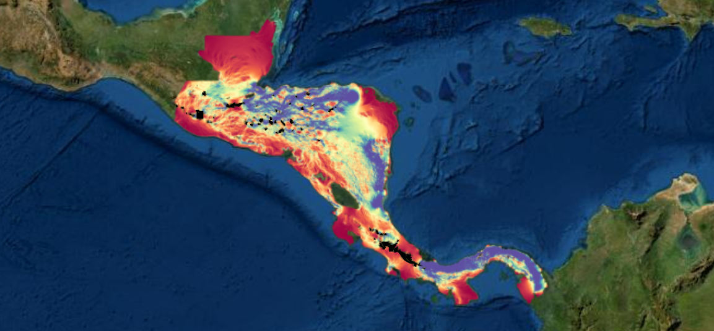

Connectivity modelling: an exploration of the ridge-to-reef connectivity of central America
Final Report
September 2022
Chapter 1 Introduction

1.1 Executive Summary
Mountain ranges constitute biodiversity hotspots and their importance only grows as lowland species shift their ranges in elevation in response to climate change. Protecting gradients which connect low to high elevation habitats are thus essential to preserving future biodiversity. However, most of the world’s mountain ranges are narrowly protected and lack the elevational distributions needed to preserve biodiversity. We map the connectivity and protected status of elevational gradients from oceans to mountain ranges in mainland central america to reveal where connectivity between protected areas and important habitats is needed and may be optimized. To our knowledge this is the first synthesis of its type for this region.
We also find clear differences in the degree to which lowland protected areas are connected to high elevation projected areas, which we believe will directly relate to how resilient they are to future climate change. Of the countries assessed, Panama contains the most connected climate corridors, largely due to the size and scale of the Darien Protected area. Costa Rica follows Panama, largely due to the importance of La Amistad protected area, a park where the climate corridors for 25 different lowland protected areas. Whilst other countries showed some potential for climate corridors, the quality of putative climate corridors in El Salvador were very low, largely due to the high degree of human modification in this region.
We developed a prioritization scheme to select potential climate corridors for active restoration initiatives through considering starting protected area size, end protected area size, climate corridor length, quality and protected status. Resulting in the selection of 25 candidate corridors in ~10 distinct geographic locations.
Finally, we developed cutting edge tools, grounded in circuit theory, to visual potential climate connectivity in central america in high resolution and apply this to 10 different regions. Finally, we advocate for the development of a novel ‘Climate Resilience Index’ to reflect each protected areas isolation from high elevation refugia. This index could be broadly applied within this study region and beyond.
Ultimately, this work demonstrates that we cannot take for granted that the ranges of terrestrial mammals will be able to shift in responce to climate change. The majorty of our lowland protected areas are fairly remote from high elevation refugia, and considerable restoration work is required to address this issue.
1.2 Approach
The approach we have taken in this report revolves around three key elements:
- to produce a fully interactive dosument where users can see and explore the underlying data
- to use state of the art remote sensing layers and methodologies to explore connectivity (e.g. Google Earth Engine)
- to provide actionable information for the design of corridors and directions of restoration activities
It is important to note that all the assessments of connectivity here rely on habitat structural variables, rather than the movement or habitat selection of individual species, and should be interpreted as such. The surfaces will be most relevant to terrestrial, primary forest dwelling mammals.
All of the data to reproduce the analysis and code in this report is stored, in this location. Email Chris Beirne for access.
All of the underlying code and data will ultimately be available on GitHub.
1.3 Report structure
The structure of the report follows the statement of work outlined in the research agreement:
Assemble of data sets at the appropriate scale and resolution to be included in the connectivity analysis (see the data assembly chapter.
Integrate remote sensed layers of habitat state and land-use into different cost surfaces (capturing barriers to wildlife movement) across the focal landscapes (see the resistance surface chapter.
Run simulations exploring the degree of connectivity between specified low and high elevation protected areas (‘nodes’), using the different cost-surface scenarios (see the least cost paths and circuitscape chapters).
Use the output of the models to identify key locations where land-use change or habitat restoration could enhance low-high elevation connectivity and overlaps with existing corridors / important areas (see the synthesis chapter).
Finally, high resolution land use maps should be produced for conservation and restoration planning. This should be underpinned by the analysis outlined in this document.